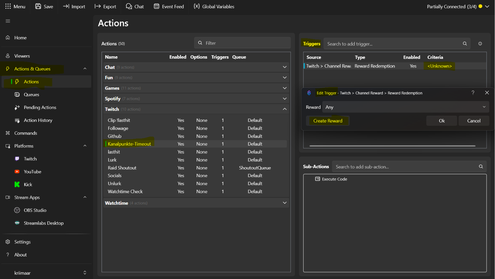
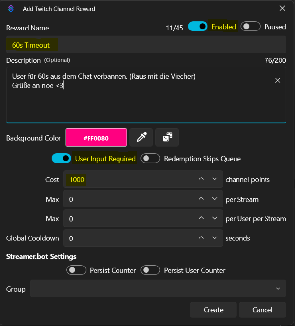

Twitch · Streamer.bot · Kanalpunkte
Kanalpunkte
Timeout.
Mit einer Kanalpunkte-Belohnung können Zuschauer andere Zuschauer für eine bestimmte Zeit aus dem Chat timeouten. Schutzregeln, Timeoutdauer und alle Chat-Texte kannst du frei anpassen, das Timeout selbst läuft vollständig über Streamer.bot.
Video-Anleitung
Einrichtung im Video ansehen
Das Video zur Einrichtung folgt hier. Bis dahin leitet dich die Anleitung in den Abschnitten darunter durch Reward und Action.
01 / Voraussetzungen
Was vorher vorhanden sein muss
Twitch-Verbindung
Streamer.bot muss mit deinem Twitch-Account verbunden sein. Der Helfer dazu findest du in Streamer.bot unter Platforms.
Streamer.bot-Belohnung
Die Kanalpunkte-Belohnung wird direkt in Streamer.bot erstellt. Nur Belohnungen aus Streamer.bot erlauben die automatische Punkterstattung.
02 / Action importieren
Import-Key in Streamer.bot einfügen
Der Import enthält die komplette Timeout-Action inklusive Schutzregeln und Punkterstattung. Deine eigenen Werte trägst du erst im Anpassungs-Abschnitt ein.
Import
- Öffne Streamer.bot.
- Klicke oben auf Import.
- Wähle Import from Clipboard.
- Klicke hier auf Import-Key kopieren.
- Füge den Key in Streamer.bot ein und bestätige den Import.
- Prüfe unter Actions, ob die Action vorhanden ist.
03 / Kanalbelohnung erstellen
Reward in Streamer.bot anlegen
Die Belohnung entsteht in Streamer.bot selbst. Nur so kann Streamer.bot eingesetzte Punkte bei abgelehnten Timeouts automatisch zurückzahlen.


Wichtige Einstellungen
| Feld | Einstellung |
|---|---|
| Reward Name | Frei wählbar, zum Beispiel „60s Timeout“. |
| User Input Required | Aktivieren. Zuschauer geben damit den Namen des Ziel-Users ein. |
| Cost | Punktepreis der Belohnung. |
| Max per Stream / per User | Optional begrenzen, um Missbrauch einzudämmen. |
| Global Cooldown | Optional, Pausen zwischen Einlösungen in Sekunden. |
04 / Trigger verbinden
Reward mit der Action verbinden
Verbindung herstellen
- Öffne unter Actions & Queues → Actions die importierte Action.
- Öffne im Bereich Triggers den vorhandenen Trigger.
- Prüfe, ob Source Twitch und Type Reward Redemption eingetragen sind.
- Wähle bei Reward die eben erstellte Kanalbelohnung aus.
- Bestätige mit Ok und speichere die Action.
Code einfügen
- Öffne die Sub-Action Execute Code.
- Ersetze den Inhalt komplett durch den generierten Code aus dem Anpassungs-Abschnitt.
- Klicke unten links erst Find Refs, danach Compile.
- Ohne Fehler: Save & Compile.
05 / Anpassen
Dauer, Schutzregeln und Texte einstellen
Alle Felder rechts fließen direkt in den Code links ein. Änderungen werden nur lokal in deinem Browser gespeichert.
06 / Test & Probleme
Kontrolle vor dem ersten Live-Test
Checkliste
- Reward ist in Streamer.bot angelegt und aktiviert.
- Trigger zeigt bei Criteria den Reward an.
- Code kompiliert ohne Fehler.
- Test Trigger auslösen und das Timeout im Chat prüfen.
Typische Probleme
- Punkte werden nicht erstattet? Die Belohnung muss in Streamer.bot erstellt sein, nicht auf Twitch.
- Timeout passiert nicht? Prüfe, ob Streamer.bot Moderator in deinem Channel ist.
- Falscher User? Im Code-Generator bei CHAT-TEXT 2 · NUTZER NICHT GEFUNDEN prüfen, ob der Platzhalter {user} enthalten ist.
Feedback & Support
Fehler gefunden oder eine Action vermisst?
Melde dich im Discord oder lege ein GitHub Issue an. Beides hilft, die Sammlung laufend zu verbessern.